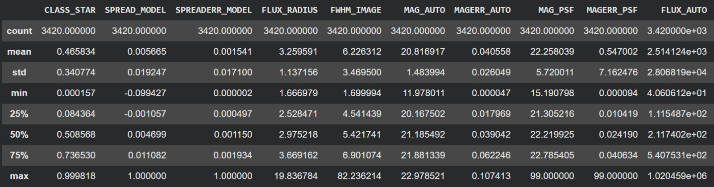
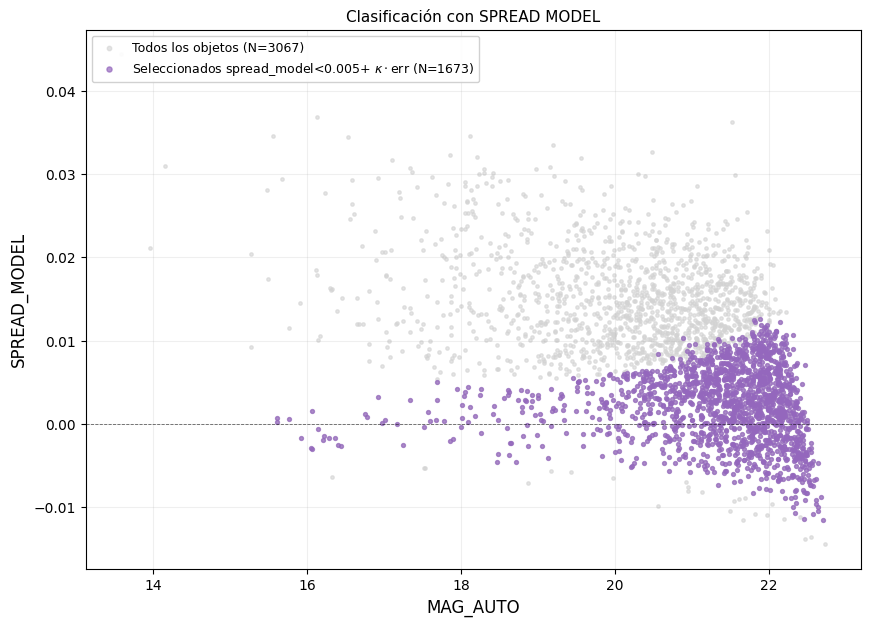
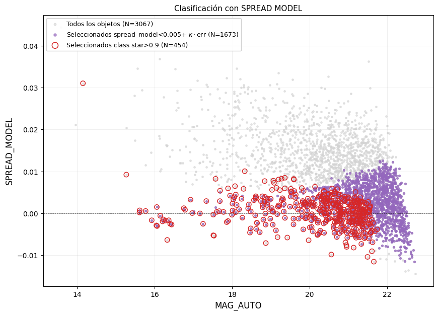
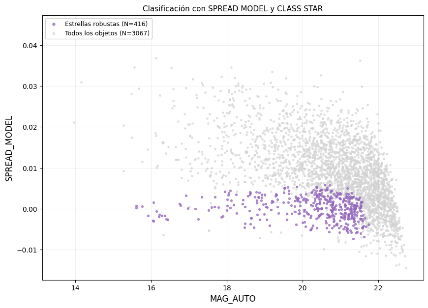

Tenemos dos parámetros de clasificación para objeto puntual/extendido para cada fuente detectada:
SPREAD_MODEL: Compara el ajuste de un modelo de funte puntual contra un modelo ligeramente extendido (el mismo PSF convolucionando con un perfil exponencial). Un valor cercano a 0 indica fuente puntual; valores positivos indican fuente extendida.
CLASS_STAR: un clasificador basado en red neuronal, entrenado con features como FWHM, pico de intensidad y perfil de brillo. Va de un valor de 0 (para una fuente extendida) a 1 (fuente puntual).
Ambos parámetros son útiles, sin embargo, ninguno es perfecto en todo el rango de magnitud.
Al momento de definir un umbral, no tomamos uno fijo, por ejemplo: $$ |SPREAD\_MODEL| < 0.002 \Rightarrow estrella $$
Este enfoque falla debido a que no todas las mediciones que hace SPREAD_MODEL tienen la misma precisión. SPREAD_MODEL es una medición fotométrica, y como tal hereda el ruido de la imagen. Ese ruido se propaga al ajuste y queda cuatificado en el parámetro SPREADERR_MODEL, el error asociado a cada medición individual. Aquí hay una relación con SNR, una fuente brillante tiene muchos fotones detectados, por lo que el ruido relativo es pequeño y SPREADERR_MODEL es diminuto, mientras que una fuente débil, cercana al límite de detección, tiene pocos fotones, ruido relativo grande, y por lo tanto SPREADERR_MODEL grande. Es decir, SPREADERR_MODEL es esencialmente un proxy del SNR de cada fuente individual.
Usar el mismo umbral fijo para fuentes de alta y baja precisión trata por igual mediciones que no son comparables en confiabilidad.
En lugar de usar SPREAD_MODEL de forma aislada, se define la significancia estadística de cada medición respecto al valor esperado para una estrella (SPREAD_MODEL=0):
Esta cantidad responde: ¿a cuántas "barras de error" de distancia está esta medición de ser compatible con una fuente puntual?
Sin embargo, existe un problema, al aplicar $n_\sigma$ de forma sobre datos reales, fuentes muy brillantes con SPREADERR_MODEL extremadamente pequeño produce valores de $n_\sigma$ artificialmente enormes.
La causa es que, a muy alto SNR, el error puramente estadístico deja de ser el factor limitante de la medición. Lo que domina en ese régimen son errores sistemáticos: imperfecciones residuales del propio modelo de PSF.
Para corregir esto, se combina el error estadístico con un piso sistemático fijo en cuadratura:
$$ \begin{gather} \sigma_{eff}=\sqrt{SPREADERR\_MODEL^2+\sigma_{sist}^2}\\ \\ n_{\sigma,eff}=\frac{|SPREAD\_MODEL|}{\sigma_{eff}} \end{gather} $$Con $\sigma_{sist}\approx 0.017$, esta corrección evita que la significancia estadística diverja de forma espuria en el régimen de alto SNR, y es análoga a cómo se combinan errores estadísticos y sistemáticos.
Para identificar candidatas a estrella de forma robusta, vamos a combinar dos clasificadores independientes:
$$ \begin{gather} Estrella(SPREAD\_MODEL): \quad |SPREAD\_MODEL| < 0.005 + \kappa\cdot SPREADERR\_MODEL\\ \\ Estrella(CLASS\_STAR): \quad CLASS\_STAR > 0.9\\ \\ Candidata\ robusta=Estrella(SPREAD\_MODEL)\cap Estrella(CLASS\_STAR) \end{gather} $$Cada uno de los clasificadores usan información e implementaciones distintas, por lo que exigir el acuerdo entre ambos métodos puede reducir el sesgo propio de un solo clasificador.
Antes de empezar el análisis, se debe hacer una limpieza previa al catálogo para dejar fuera posibles outliers como mediciones no físicas o fallidas.

SPREAD_MODEL.
En las estadísticas anteriores podemos ver que hay un valor máximo para MAG_PSF y MAGERR_PSF de 99. Entonces, vamos a eliminar algunas detecciones mala que tengan las siguientes caracteristicas:
FLAGS$\geq 4$MAG_PSF$\geq 90$MAGERR_PSF$\geq 90$FWHM_IMAGE$\leq 0$SPREADERR_MODEL$\leq 0$SNR_WIN$\geq 20$
Al momento de hacer la limpieza del catálogo obtenemos un total de 3067 objetos, por lo que ahora podemos pasar a hacer nuestro análisis. Tomando los umbrales mencionados anteriormente, CLASS_STAR clasifica como objetos puntuales a 454 mientras que SPREAD_MODEL a 1673.

SPREAD_MODEL usando el umbral mencionado antes.
Ahora, en la grafica anterior, vamos a ubicar los objetos que clasifico CLASS_STAR con el umbral definido.

SPREAD_MODEL en función de MAG_AUTO, marcando los objetos clasificados como puntuales por CLASS_STAR.
En la grafica anterior podemos darnos cuentas que algunos objetos que marco CLASS_STAR como puntuales, SPREAD_MODEL no los considero puntuales. Entonces, la clasificación con objetos que cumplen ambos umbrales, es decir, aquellos objetos que cumplen nuestro criterio para Estrella robusta, se ve de la siguiente forma:

SPREAD_MODEL en función de MAG_AUTO, usando como umbral el definido para una Estrella robusta.